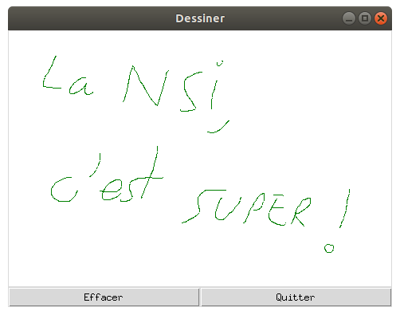

Evénements souris
Dans cet exemple, on dessine un carré sur un Canvas à l’endroit du clic de la souris. Pour cela, on utilise l’événement associé au clic gauche de la souris :
import tkinter as tk
# Constantes
LARGEUR = 480
HAUTEUR = 320
def clic(event):
""" Gestion de l'événement clic gauche sur la zone graphique """
# position du pointeur de la souris
X = event.x
Y = event.y
# on dessine un carré
r = 20
surface_dessin.create_rectangle(X-r, Y-r, X+r, Y+r, outline='black', fill='green')
def effacer():
""" Efface la zone graphique """
surface_dessin.delete(tk.ALL)
# Création de la fenêtre principale (main window)
mon_app = tk.Tk()
mon_app.title('Cercle')
# Création d'un widget Canvas (zone graphique)
surface_dessin = tk.Canvas(mon_app, width=LARGEUR, height=HAUTEUR, bg='white')
surface_dessin.grid(row=0, column=0, columnspan=2)
# La méthode bind() permet de lier un événement avec une fonction :
# un clic gauche sur la surface provoquera l'appel de la fonction clic()
surface_dessin.bind('<Button-1>', clic)
# Création d'un widget Button (bouton effacer)
tk.Button(mon_app, text='Effacer', command=effacer).grid(row=1, column=0, sticky='ew')
# Création d'un widget Button (bouton Quitter)
tk.Button(mon_app, text='Quitter', command=mon_app.destroy).grid(row=1, column=1, sticky='ew')
mon_app.mainloop() Capture du clic de souris
Pour réaliser cet exemple, nous devons
- appeler une fonction de notre choix lorsqu'un clic de souris est effectué
- récupérer les coordonnées sur le Canvas du clic de souris
La première action est réalisée par la ligne :
surface_dessin.bind('<Button-1>', clic)
Cette nouvelle méthode bind() permet d'associer un événement à une
fonction, ici, la fonction clic().
L'événement que nous souhaitons capturer est <Button-1>. Cet
événement est prédéfini dans Tkinter et correspond à un clic gauche de souris.
La fonction clic() qui récupère le clic de souris prend un paramètre
event qui est généré automatiquement par Tkinter.
event est un objet qui possède deux propriétés intéressantes pour notre
problème :
event.x et event.y qui sont les
coordonnées de la souris sur la surface.
A vous de jouer
Vous allez réaliser votre premier logiciel de dessin ! L'idée est de dessiner une ligne lorsque le bouton
de la souris reste enfoncé. Voici ce que vous devrez obtenir :

Quelques indications
Pour réaliser cet exercice, vous aurez besoin de détecter un nouvel événement sur le Canvas : le
déplacement de la souris avec le bouton enfoncé.
Le nom Tkinter pour cet événement est <B1-Motion>. Son
utilisation est identique à celui de l'exemple.
Pour dessiner, vous utiliserez la méthode create_line(x1, y1, x2, y2) de
Canvas où A(x1, y1) est l'origine du segment et B(x2, y2) est l'extrémité du segment.
Du coup, vous aurez probablement besoin de mémoriser en plus de la position actuelle de la souris, sa position antérieure afin de tracer le segment entre les deux positions. Peut-être aurez-vous besoin de recourir à des variables globales.
Solution possible
import tkinter as tk
# Constantes
LARGEUR = 480
HAUTEUR = 320
# Variables globales
old_x, old_y = 0, 0
def clic(event):
""" Gestion de l'événement clic gauche sur la zone graphique """
global old_x, old_y
# position du pointeur de la souris
old_x = event.x
old_y = event.y
def drag(event):
global old_x, old_y
x = event.x
y = event.y
surface_dessin.create_line(old_x, old_y, x, y, fill='green')
old_x = event.x
old_y = event.y
def effacer():
""" Efface la zone graphique """
surface_dessin.delete(tk.ALL)
# Création de la fenêtre principale (main window)
mon_app = tk.Tk()
mon_app.title('Dessiner')
# Création d'un widget Canvas (zone graphique)
surface_dessin = tk.Canvas(mon_app, width=LARGEUR, height=HAUTEUR, bg='white')
surface_dessin.grid(row=0, column=0, columnspan=2)
# La méthode bind() permet de lier un événement avec une fonction :
# un clic gauche sur la surface provoquera l'appel de la fonction clic()
surface_dessin.bind('<Button-1>', clic)
surface_dessin.bind('<B1-Motion>', drag)
# Création d'un widget Button (bouton effacer)
tk.Button(mon_app, text='Effacer', command=effacer).grid(row=1, column=0, sticky='ew')
# Création d'un widget Button (bouton Quitter)
tk.Button(mon_app, text='Quitter', command=mon_app.destroy).grid(row=1, column=1, sticky='ew')
mon_app.mainloop()